Demo guide
Tracer shows JB Harris's trucks and loads on a map, a board and a timeline. This guide signs you in and walks through the three ways to see it: the staff view, the customer view, and the big screen.
Your sign-in details came separately, by email from Shane. They are not on this page. If you do not have them, ask him and he will send them again.
Two logins, one address. Each shows the Tracer as a different kind of person sees it.
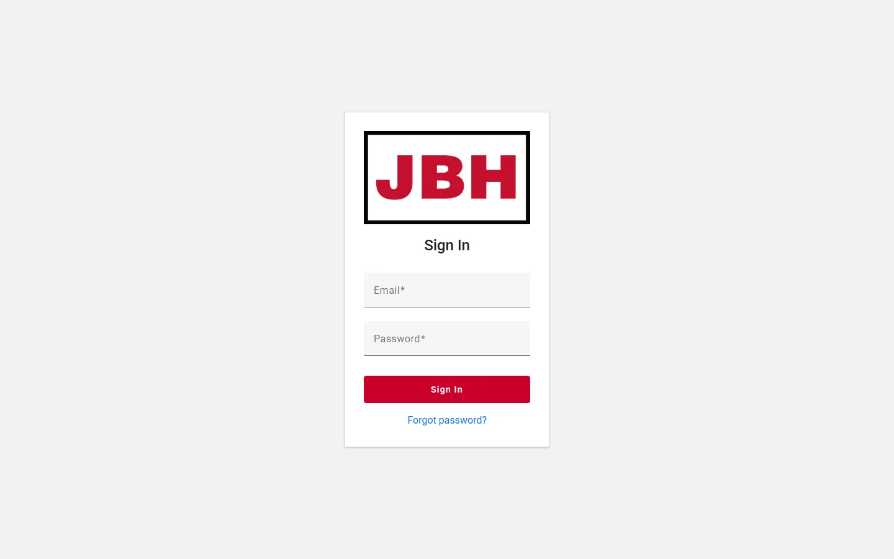
| Login | What it shows |
|---|---|
| Staff view | What JB Harris staff see: every load and truck, the booking details with the carrier's cost and the profit, and the big screen (TV). |
| Customer view | What one customer, Demo Customer Co, is shown: only their own loads and trucks, and no cost or profit. |
The staff login is not an administrator login. Administrators have three more screens in the same menu (Users, Application Logs, Control Panel) for managing the system; they are not part of this demo.
Everything named Demo is made up. The cities are real, so the map can place the trucks.
The loads, bookings, customers and shippers in this demo are invented. Their BOL numbers run from 990001 to 990012, and the customers are called Demo Customer Co, Demo Retail Group and Demo Foods Inc.
In real use, trucks come from Samsara, loads and their ETAs from Macropoint, and bookings from Primus.
Sign in with the staff login.
Across the top are the three ways to look at the same trucks and loads (Map, Board, Timeline), a search box (try a BOL number, a customer, a driver or a city), the time in Eastern, and a TV button for the big screen. Whatever you select stays selected as you move between the three.
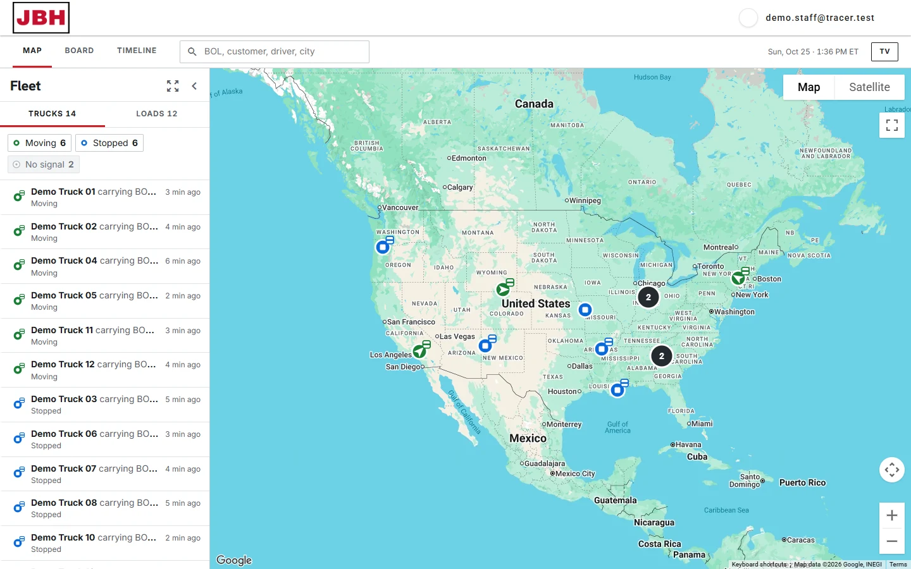
The list on the left has two tabs, Trucks and Loads, with counts. The buttons under them (Moving, Stopped, No signal) switch each kind on or off. On the map, a green circle with an arrow is a truck on the move, a blue circle is a truck that has stopped, and a small box on a truck means it is carrying a load. Pins that would overlap become a numbered circle. Press a pin or a row to open its details on the right.
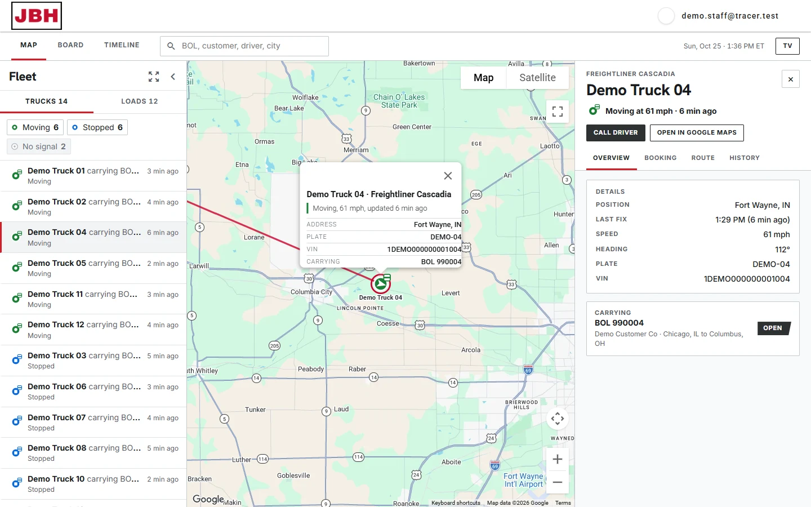
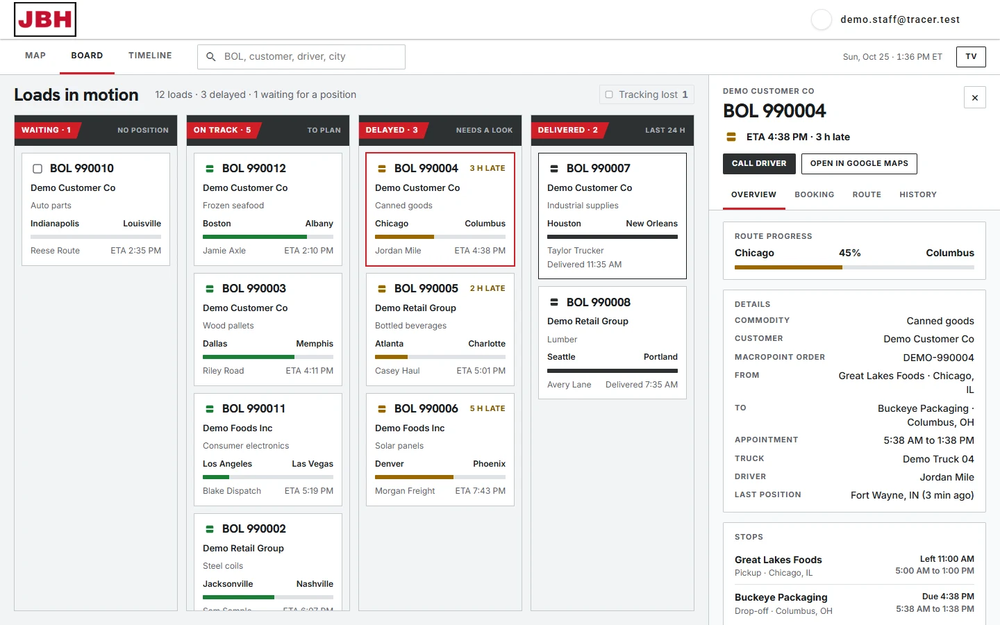
Every load is a card in a column: Waiting (no position yet), On track, Delayed and Delivered (kept for 24 hours). A card shows the BOL number, the customer, what is on it, the lane with a progress bar, the driver and the ETA. Late loads say how late, for example 3 H LATE. The Tracking lost button brings back loads that stopped reporting. Press a card to open its details.
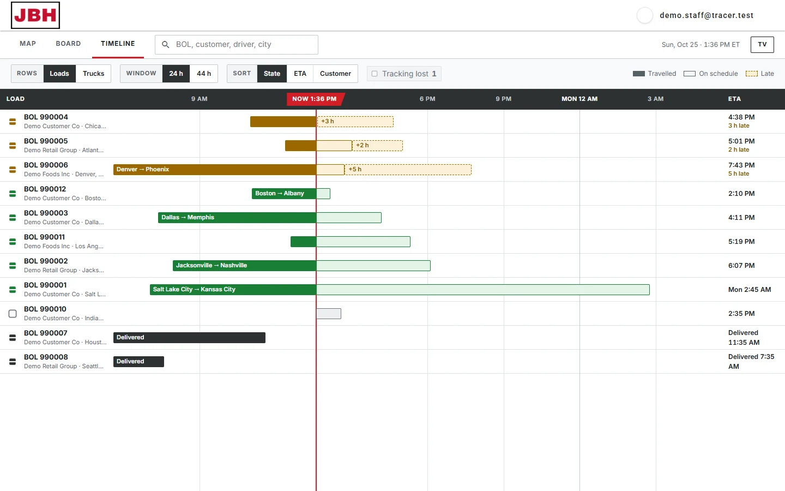
Each row is a load, or a truck if you switch Rows to Trucks. The red line is now. A solid bar is the distance travelled, the pale bar after it is the time still to go, and a dashed amber bar is time late. Black is delivered. You can change the window (24 or 44 hours) and the order (State, ETA or Customer). Late loads sort to the top.
Press any truck or load and a panel opens on the right, with four tabs:
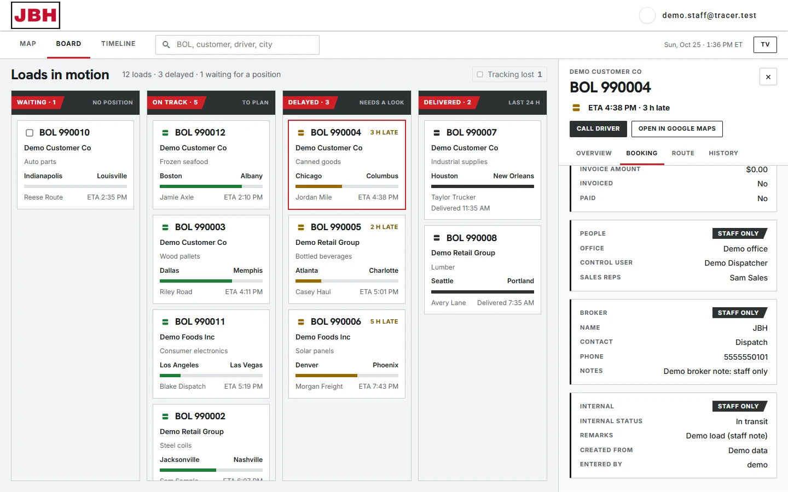
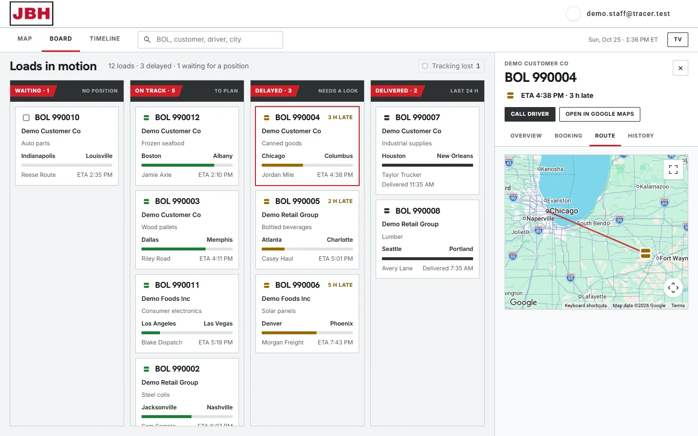
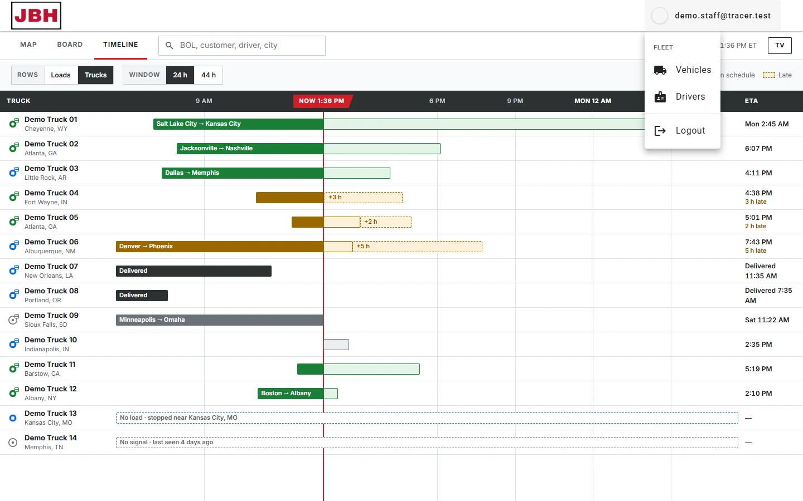
The menu on your email address, top right, has a Fleet group for staff: Vehicles and Drivers open the lists of the company's trucks and drivers (double-click a row for its details). The logo returns you to the Tracer.
Sign in with the customer login.
A customer gets the same Map, Board and Timeline and the same details panel, but only for their own loads and the trucks carrying them. Demo Customer Co has 7 of the 12 sample loads, in every state, so every screen has something to show.
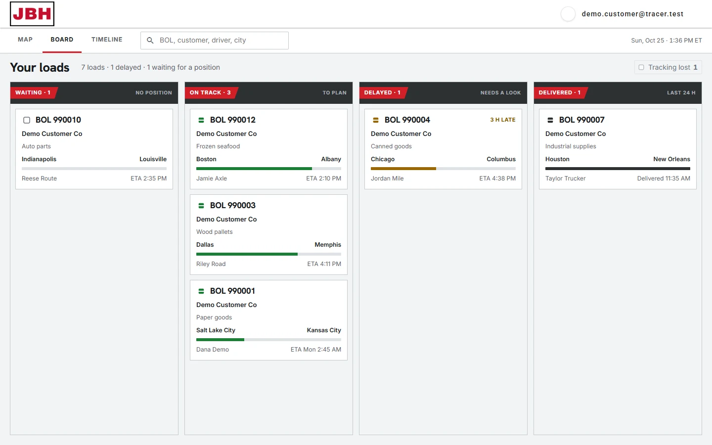
What is different from the staff view:
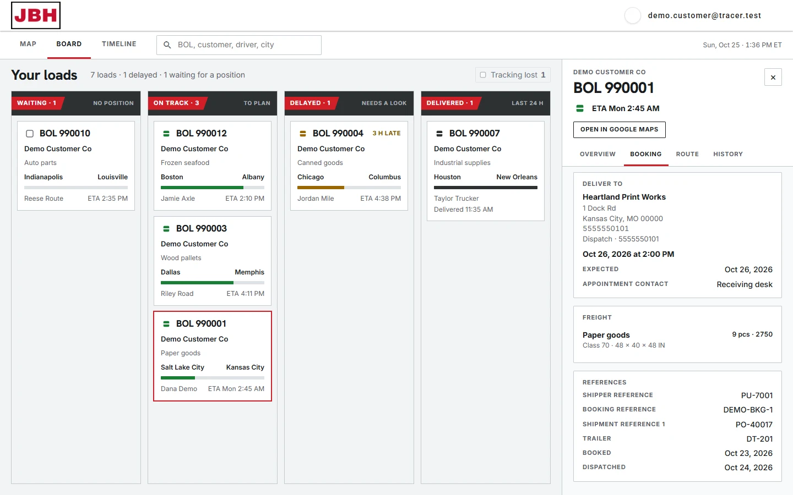
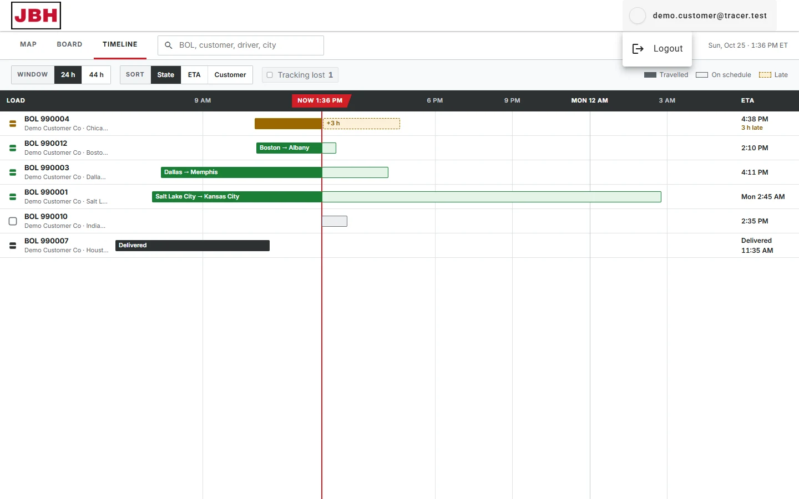
The menu on the customer's email address holds only Logout: there is no Fleet group. The staff screens are closed to them, and typing one of their addresses sends them back to the Map. This is enforced by the database rules, not just hidden on screen: a customer's account cannot read a booking at all, only a trimmed copy of it that leaves out everything on the staff side.
For a wall display in the office. Only staff can open it.
Sign in with the staff login and press TV, top right of the bar. It fills the whole window and needs no clicking: it keeps itself up to date.
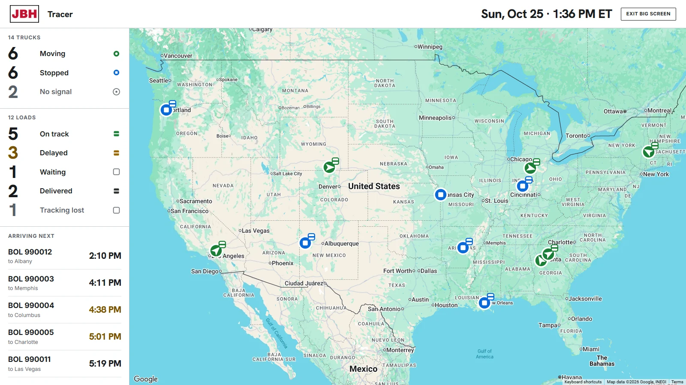
The type is sized to the window, so a bigger screen across the room reads bigger. Press F11 for the browser's full-screen mode. To leave, press Exit big screen, top right.
Every state has a shape and a word as well as a colour, so nothing depends on colour alone. Trucks are circles and loads are squares.
| State | Looks like | What it means |
|---|---|---|
| Moving | Green circle with an arrow | A truck doing 3 mph or more that reported in the last 10 minutes. |
| Stopped | Blue circle | A truck that reported in the last 24 hours and is not moving. |
| No signal | Hollow grey circle | A truck with no report for 24 hours. Hidden until you switch it on. Trucks silent for over 30 days are left off. |
| On track | Green square | A load with a position that is on schedule. |
| Delayed | Amber square | Macropoint's schedule says the load will miss its appointment, or already has. |
| Waiting | Empty square | A load with no position yet. Listed, but not drawn on the map. |
| Delivered | Dark square | A load that has left its last stop. Kept on the Board for 24 hours. |
| Tracking lost | Hollow grey square | A load with no position for a day, or nothing heard for 3 days. Hidden until you switch it on. |